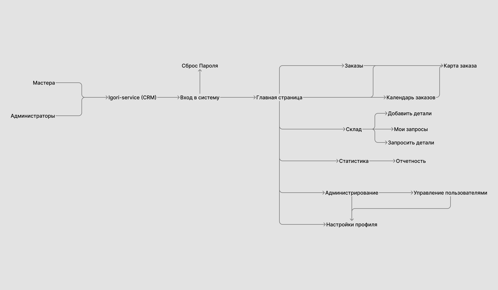
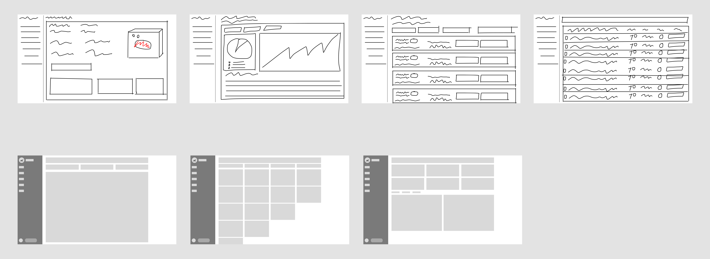
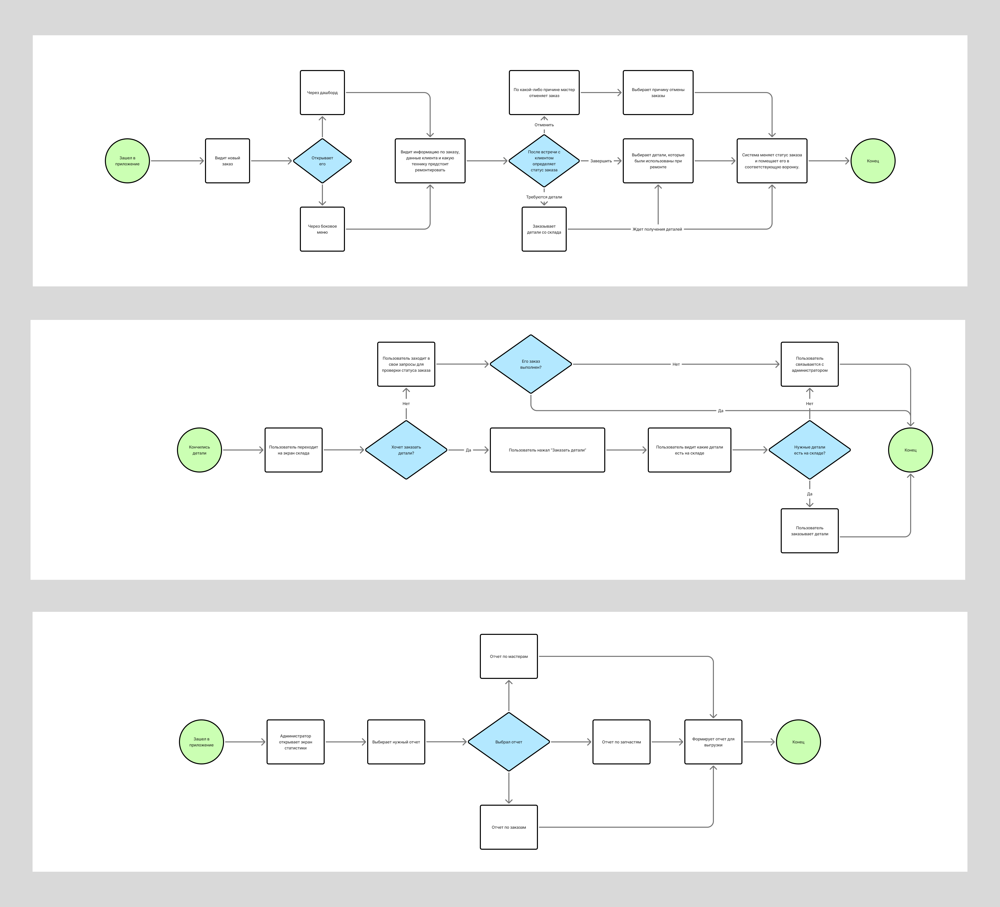
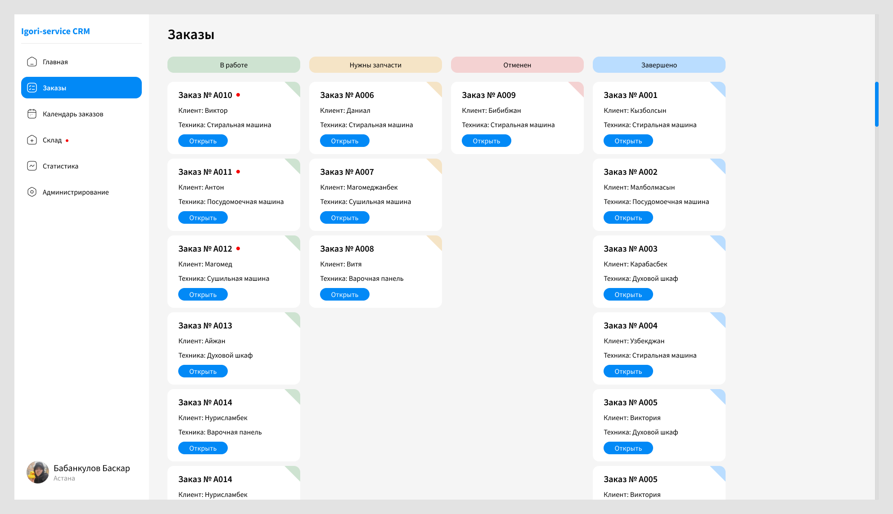
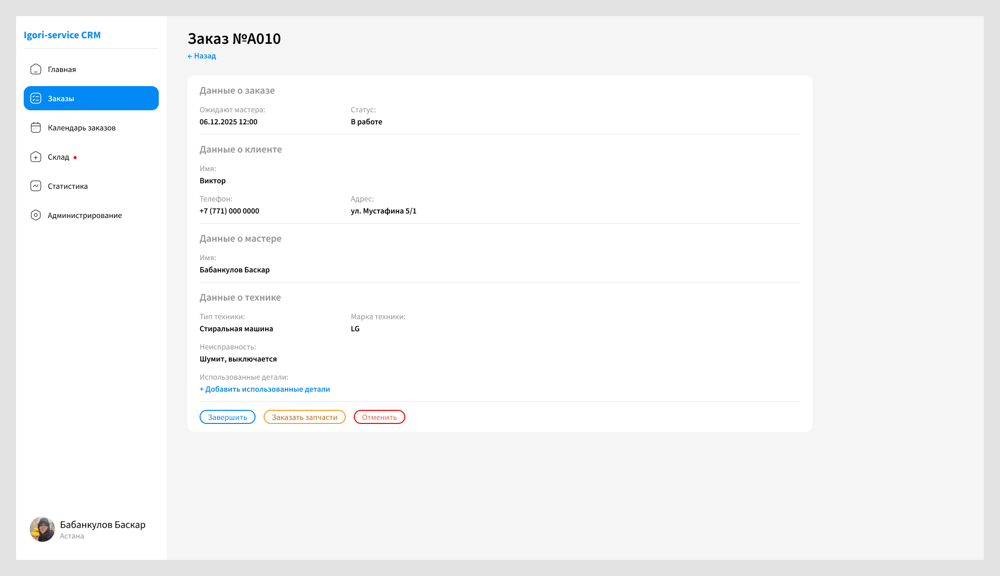
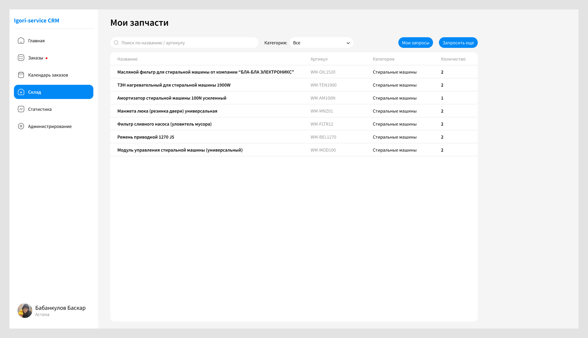
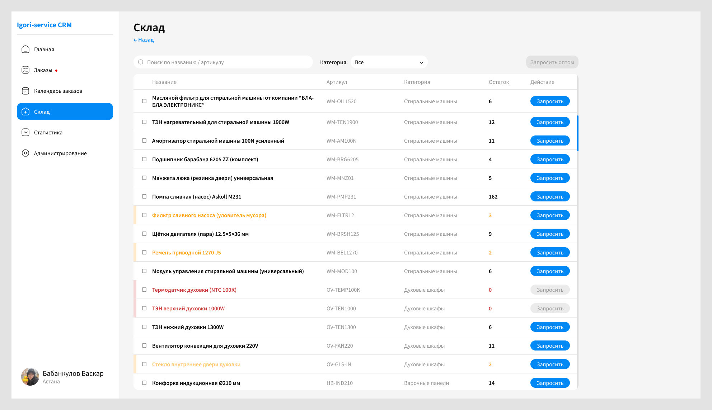
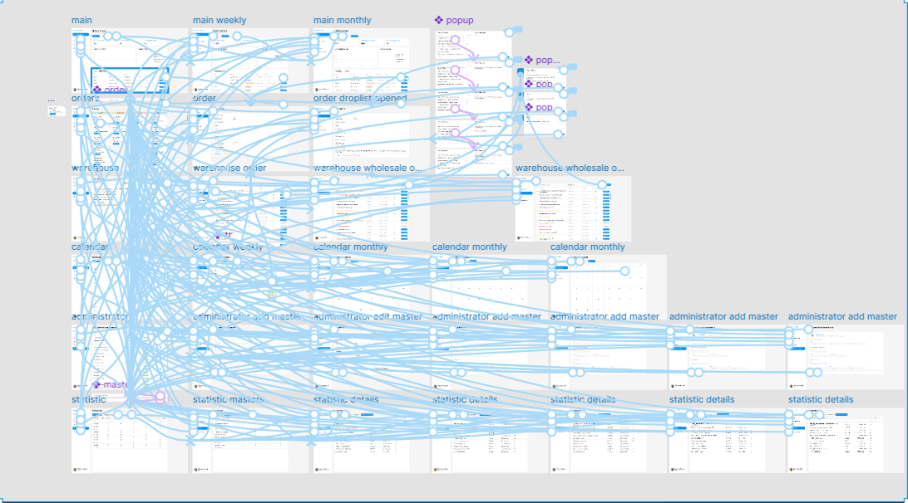

BNS Service
Проектирование дизайна сайта и CRM-системы.

О продукте
BNS Service подразумевался как сайт для сервисного центра, но позже заказчик попросил сделать CRM-систему для сотрудников, чтобы сократить расходы на содержание офиса.
Контекст
Директор сервисного центра, изучая рынок в Москве, обратил внимание на существенное отличие в операционной модели конкурентов. Московские сервисные центры активно использовали собственные CRM-системы (аналогичные Битрикс24), которые позволяли минимизировать затраты на содержание офиса.
Вся работа выстраивалась внутри системы: администраторы создавали заказы, распределяли их между сотрудниками, а мастера принимали и закрывали задачи прямо через CRM. Через ту же систему сотрудники могли заказывать запчасти, отслеживать статус ремонтов и контролировать свою выручку.
Ключевое отличие заключалось в том, что сотрудникам больше не требовалось физически присутствовать в офисе — все рабочие процессы были доступны с телефона.
Проблемы
- Лишние операционные затраты
- Зависимость от офиса
- Снижение прозрачности и управляемости процессов
Что в итоге сделал?
CRM задумывалась как десктопная система, но реальное использование сместилось в мобильный сценарий: мастера работают с телефона, а десктоп остался для администраторов и руководства.
Сфокусировался на ключевых сценариях сотрудников и упростил их до быстрых действий с телефона:
- Получение и обработка заказов
- Мониторинг складских запасов
- Заказ запчастей
- Разделил логику по ролям (администратор/мастер)
В результате сотрудники могут работать полностью удалённо, а процессы стали прозрачнее и проще в управлении.
Процесс
Не использовал формальные фреймворки вроде Double Diamond или дизайн-мышления, а сфокусировался на базовом цикле: исследование → анализ → проектирование → тестирование.
Исследование
Интервью со стейкхолдерами позволило быстро собрать разные точки зрения, понять реальные проблемы и не тратить время на лишние гипотезы.
Во время разговоров сотрудники описывали процессы через детали и частные случаи, поэтому я фокусировался на сути — задавал вопросы, чтобы выделить ключевые сценарии: как создаются заказы, как они распределяются, где возникают задержки и как ведётся учёт.
Отдельно собрал взгляд бизнеса — какие задачи система должна решать с точки зрения эффективности и управления.
В итоге сфокусировались на главном — переносе всех процессов в единую систему и упрощении работы мастеров через мобильный интерфейс.
Что удалось определить:
- Какую проблему решаем: разрозненные процессы, зависимость от офиса и низкая прозрачность работы сотрудников.
- Что должен делать продукт: позволять создавать, распределять и закрывать заказы, отслеживать статусы, работать с запчастями.
- Бизнес-цель: снизить операционные затраты и повысить управляемость процессов.
- Почему это важно: сотрудники могут работать без привязки к офису, а бизнес получает прозрачную и контролируемую операционную модель.
На основе интервью собрал структуру системы.

Дизайн-процесс
Если собрать ключевые данные по заказам, сотрудникам и показателям в едином интерфейсе с акцентом на визуализацию (дашборд + списки), то пользователи смогут быстрее отслеживать статус работы, принимать решения и управлять процессами без лишних действий. С такой гипотезой набрасывал скетчи и проектировал путь пользователя.


Заказы — это важно
Именно здесь мастера проводят большую часть времени: просматривают список заказов, отслеживают их статусы, открывают карточки и обновляют состояние работы. После завершения работ заказ закрывается внутри карточки.


Склад тоже важен
Здесь мастера и администраторы проводят значительную часть времени: пополняют запасы, создают и обрабатывают запросы на выдачу запчастей.
На этапе MVP были реализованы базовые сценарии работы со складом. Позже добавили возможность формировать акт приёма-передачи запчастей, чтобы фиксировать движение деталей между сотрудниками и повышать прозрачность учёта.
Акт генерируется автоматически на основе данных системы и шаблона документа, с последующей выгрузкой в PDF для печати и передачи.


Прототип
Собрал интерактивный прототип в Figma, используя Smart Animate. Продумал переходы и анимации под ключевые сценарии, чтобы максимально приблизить поведение к реальному продукту.

Выводы
- Реальная проблема была не в отсутствии интерфейса, а в разрозненных процессах.
- Интервью со стейкхолдерами дали достаточно данных, чтобы быстро понять проблему и выстроить структуру продукта.
- Смещение фокуса в мобильный сценарий оказалось критичным — именно там происходит основная работа пользователей.